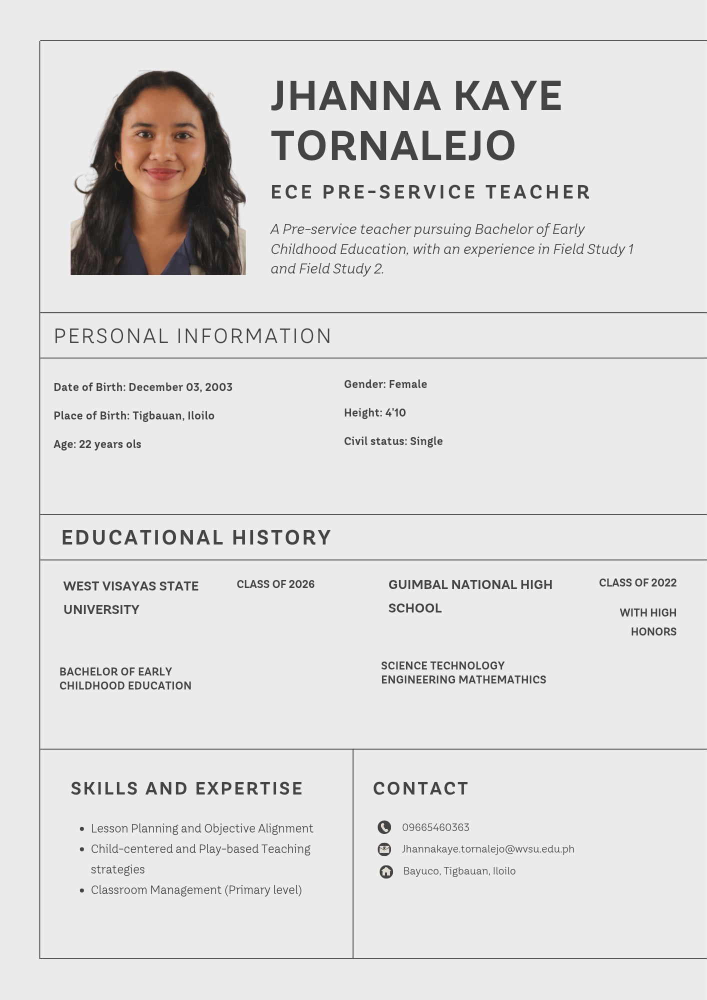

Professional Documents
Resume / CV
Certificates

Teaching Philosophy Statement: My Philosophy of Teaching
My teaching philosophy is rooted in the belief that learning should be as natural, engaging, and profound as play. I view the classroom as a "laboratory for life" where learners move from being passive recipients of information to active creators of knowledge. By primarily employing Progressivist and Constructivist methodologies, I encourage learners to "play" with ideas, materials, and collaboration. This hands-on approach ensures that education is not merely the memorization of facts, but a dynamic process of discovery that prepares learners for the complexities of the real world. Beyond academic content, my goal is to cultivate holistic 21st-century competencies—such as critical thinking, creativity, and communication—that empower learners to navigate an evolving global landscape. I believe that teaching is a deeply relational act, requiring a foundation of "radical empathy" in every interaction. By fostering a supportive and inclusive environment, I aim to honor the individual experience of each learner, ensuring they feel seen, valued, and inspired to reach their full potential.